from kaggle import api
from dtreeviz.trees import *
from fastai.tabular.all import *
from IPython.display import Image, display_svg, SVG
from pandas.api.types import is_string_dtype, is_numeric_dtype, is_categorical_dtype
from sklearn.ensemble import RandomForestRegressor
from sklearn.tree import DecisionTreeRegressor, export_graphviz
pd.options.display.max_rows = 20
pd.options.display.max_columns = 8A Journey Through Fastbook (AJTFB) - Chapter 9: Tabular Modeling
fastai
fastbook
tabular
structured
decision trees
random forest
embeddings
categorical variables
boosting
gdbt
xgboost
In chapter of 8 of “Deep Learning for Coders with fastai & PyTorch” we learned that the neural network version of of collaborative model is in fact built on something called
TabularModel, and that in fact, an EmbeddingNN is nothing but a TabularModel without any continuous (or real) numbers. “Structured” or “tabular” data describes datasets that look like an Excel spreadsheet or a relational database table, of which, it may be a composed of both categorical and/or real numbers. Working with such data is the subject of chapter 9, so lets go!
Other posts in this series:
A Journey Through Fastbook (AJTFB) - Chapter 1
A Journey Through Fastbook (AJTFB) - Chapter 2
A Journey Through Fastbook (AJTFB) - Chapter 3
A Journey Through Fastbook (AJTFB) - Chapter 4
A Journey Through Fastbook (AJTFB) - Chapter 5
A Journey Through Fastbook (AJTFB) - Chapter 6a
A Journey Through Fastbook (AJTFB) - Chapter 6b
A Journey Through Fastbook (AJTFB) - Chapter 7
A Journey Through Fastbook (AJTFB) - Chapter 8
Tabular Modeling
What is it?
“Tabular modeling takes data in the form of a table (like a spreadsheet or CSV). The objective is to predict the value of one column based on the values in the other columns.” Tabular data is also called “structured data” while “unstructured data” represents things like text, images, audio, etc…
Why is it important?
Though it is reported that 80-90% of data is unstructured (think images, text, audio), ironically, it appears that the vast majority of “real world” machine learning is concerened with tabular/structured data.
If you are just starting out with Data Science you should know that still the vast majority of DS problems in the industry concern structured/tabular data. This is what you should focus on in order to make a professional inroad.
— Bojan Tunguz (@tunguz) February 23, 2022
1/3
Note
And here’s the good news … “recent studies have shown that the vast majority of datasets can be be modeled with just two methods.”
What are they?
For structured data, ensembles of decision trees (e.g., random forests and gradient boosting machines like XGBoost).
For unstructured data, multilayered neural networks learned with SGD.
Note
“… ensembles of decision trees tend to train faster, are often easier to interpret, do not require special GPU hardware for inference at scale, and often require less hyperparameter tuning.
Important
Since a “critical step of interpreting a model of tabular data is significantly easier for decesion tree ensembles … ensembles of decision trees are our first approach for analyzing a new tabular dataset”
Important
Neural networks will considered when “there are some high-cardinality categorical variables” or there are columns with unstructured data. A example of a high “cardinality” (e.g., the number of discrete levels representing the categories) would be something like zip code.
See pages 282-284 for more discussion on the pros/cons of decision trees and neural networks for tabular data.
Categorical Embeddings
Continuous v. Categorical
Continuous variables “contain a real numbers that be fed into a model directly and are meaningful in and out of themselves. Examples include”age” and “price”.
Categorical variables “contain a number of discrete levels, such as ‘movie ID,’ for which addition and multiplication don’t have any meaning (even if they’re stored as numbers). Other examples include dates, columns indicating”sex”, “gender”, “department”, etc…
How do we represent “categorical” data?
We learned this in chapter 8, we represent such data via entity embeddings.
Important
Entity embeddings allow for a more complex and learnt numerical representation of a thing. This representation is likely task/data specific to one degree or another such that “Sunday” may have one representation in a task predicting how many hours people work on a day, and another for a task attempting to predict the number of trades that will be executed on each day of the week.
Note
“… by mapping similar values close to each other in the embedding space it reveals the intrinsic properties of the categorical variable. [It] is especially useful for datasets with lots of high cardinality features.. See pp.278-282 for examples of this in relation to the Rossmann sales competition on kaggle.
Because “an embedding layer is exactly equivalent to placing an ordinary linear layer after every one-hot-encoded input layer … the embedding transforms the categorical variables into inputs that are both continuous and meaningful.”

In other words …
Important
“… we provide the model fundamentally categorical data about discrete entities … and the model learns an embedding for these entities that defines a continuous notion of distance between them.”
Note
Given all this, “we can combine our continous embedding values with truly continuous input data [by just concatentating] the variables and feed[ing] the concatenation into our final dense layers. For an example of this, see the “Wide & Deep Learning for Recommender Systems” paper. See the below from page 282 on what that approach looks like.

Imports
Data preparation
Step 1: Get the data
We’ll be getting the data from kaggle. If you’re running on colab, check out these instructions for getting setup with the kaggle API
path = Path("bluebook")
pathPath('bluebook')if not path.exists():
path.mkdir()
api.competition_download_cli("bluebook-for-bulldozers", path=path)
file_extract(path / "bluebook-for-bulldozers.zip")
path.ls(file_type="text")Downloading bluebook-for-bulldozers.zip to bluebook100%|██████████| 48.4M/48.4M [00:00<00:00, 112MB/s] (#7) [Path('bluebook/Machine_Appendix.csv'),Path('bluebook/Test.csv'),Path('bluebook/ValidSolution.csv'),Path('bluebook/median_benchmark.csv'),Path('bluebook/TrainAndValid.csv'),Path('bluebook/Valid.csv'),Path('bluebook/random_forest_benchmark_test.csv')]Step 2: EDA
Important
“In any sort of data science work, it’s important to look at your data directly to make sure you understand the format, how it’s stored, what types of values it holds, etc.”
Tip
“… it’s a good idea to also specify low_memory=False unless Pandas acutally runs out of memory.” The default = True (will look only at the first few rows of data to infer column datatypes).
train_df = pd.read_csv(path / "TrainAndValid.csv", low_memory=False)
test_df = pd.read_csv(path / "Test.csv", low_memory=False)
train_df.columnsIndex(['SalesID', 'SalePrice', 'MachineID', 'ModelID', 'datasource',
'auctioneerID', 'YearMade', 'MachineHoursCurrentMeter', 'UsageBand',
'saledate', 'fiModelDesc', 'fiBaseModel', 'fiSecondaryDesc',
'fiModelSeries', 'fiModelDescriptor', 'ProductSize',
'fiProductClassDesc', 'state', 'ProductGroup', 'ProductGroupDesc',
'Drive_System', 'Enclosure', 'Forks', 'Pad_Type', 'Ride_Control',
'Stick', 'Transmission', 'Turbocharged', 'Blade_Extension',
'Blade_Width', 'Enclosure_Type', 'Engine_Horsepower', 'Hydraulics',
'Pushblock', 'Ripper', 'Scarifier', 'Tip_Control', 'Tire_Size',
'Coupler', 'Coupler_System', 'Grouser_Tracks', 'Hydraulics_Flow',
'Track_Type', 'Undercarriage_Pad_Width', 'Stick_Length', 'Thumb',
'Pattern_Changer', 'Grouser_Type', 'Backhoe_Mounting', 'Blade_Type',
'Travel_Controls', 'Differential_Type', 'Steering_Controls'],
dtype='object')describe() is a method that gives you some basic stats for each column.
train_df.describe().T| count | mean | std | min | 25% | 50% | 75% | max | |
|---|---|---|---|---|---|---|---|---|
| SalesID | 412698.0 | 2.011161e+06 | 1.080068e+06 | 1139246.0 | 1421897.75 | 1645852.5 | 2261012.50 | 6333349.0 |
| SalePrice | 412698.0 | 3.121518e+04 | 2.314174e+04 | 4750.0 | 14500.00 | 24000.0 | 40000.00 | 142000.0 |
| MachineID | 412698.0 | 1.230061e+06 | 4.539533e+05 | 0.0 | 1088593.25 | 1284397.0 | 1478079.25 | 2486330.0 |
| ModelID | 412698.0 | 6.947202e+03 | 6.280825e+03 | 28.0 | 3261.00 | 4605.0 | 8899.00 | 37198.0 |
| datasource | 412698.0 | 1.351694e+02 | 9.646749e+00 | 121.0 | 132.00 | 132.0 | 136.00 | 173.0 |
| auctioneerID | 392562.0 | 6.585268e+00 | 1.715841e+01 | 0.0 | 1.00 | 2.0 | 4.00 | 99.0 |
| YearMade | 412698.0 | 1.899050e+03 | 2.921902e+02 | 1000.0 | 1985.00 | 1995.0 | 2001.00 | 2014.0 |
| MachineHoursCurrentMeter | 147504.0 | 3.522988e+03 | 2.716993e+04 | 0.0 | 0.00 | 0.0 | 3209.00 | 2483300.0 |
advanced_describe() is a method I created that builds on top of the default describe() method to include stats on missing and unique values (which are both very helpful in terms of cleanup, understanding potential issues, and in determining the size of your embeddings for categorical data). For categorical variables with few discrete levels, this method will also show you what they are.
advanced_describe(train_df)| count | mean | std | min | ... | unique | unique% | unique_values | dtype | |
|---|---|---|---|---|---|---|---|---|---|
| SalesID | 412698 | 2011161.16364 | 1080067.724498 | 1139246.0 | ... | 412698 | 7786.75 | NaN | int64 |
| SalePrice | 412698 | 31215.181414 | 23141.743695 | 4750.0 | ... | 954 | 18.00 | NaN | float64 |
| MachineID | 412698 | 1230061.436646 | 453953.25795 | 0.0 | ... | 348808 | 6581.28 | NaN | int64 |
| ModelID | 412698 | 6947.201828 | 6280.824982 | 28.0 | ... | 5281 | 99.64 | NaN | int64 |
| datasource | 412698 | 135.169361 | 9.646749 | 121.0 | ... | 6 | 0.11 | [121, 132, 136, 149, 172, 173] | int64 |
| ... | ... | ... | ... | ... | ... | ... | ... | ... | ... |
| Backhoe_Mounting | 80712 | NaN | NaN | NaN | ... | 3 | 0.06 | [nan, None or Unspecified, Yes] | object |
| Blade_Type | 81875 | NaN | NaN | NaN | ... | 11 | 0.21 | [nan, PAT, None or Unspecified, Semi U, VPAT, Straight, Angle, No, U, Landfill, Coal] | object |
| Travel_Controls | 81877 | NaN | NaN | NaN | ... | 8 | 0.15 | [nan, None or Unspecified, Differential Steer, Lever, Finger Tip, 2 Pedal, Pedal, 1 Speed] | object |
| Differential_Type | 71564 | NaN | NaN | NaN | ... | 5 | 0.09 | [Standard, nan, Limited Slip, No Spin, Locking] | object |
| Steering_Controls | 71522 | NaN | NaN | NaN | ... | 6 | 0.11 | [Conventional, nan, Command Control, Four Wheel Standard, Wheel, No] | object |
53 rows × 14 columns
Step 3: Preprocessing
Handling Ordinal columns
Tip
“… a good next step is to handle ordinal columns … columns containing strings or similar, **but where those strings have a natural ordering.”
train_df.ProductSize.unique()array([nan, 'Medium', 'Small', 'Large / Medium', 'Mini', 'Large',
'Compact'], dtype=object)
Important
“tell Pandas about a suitable ordering of these levels”
sizes = ["Large", "Large / Medium", "Medium", "Small", "Mini", "Compact"]
train_df.ProductSize = train_df.ProductSize.astype("category")
train_df.ProductSize = train_df.ProductSize.cat.set_categories(
sizes, ordered=True
) # note: "inplace=True" is depreciated as of 1.30
train_df.ProductSize.unique()[NaN, 'Medium', 'Small', 'Large / Medium', 'Mini', 'Large', 'Compact']
Categories (6, object): ['Large' < 'Large / Medium' < 'Medium' < 'Small' < 'Mini' < 'Compact']Handling Your Dependent Variable(s)
Tip
Update the dependent variable to suit your objective.
“You should think carefully about which metric, or set of metrics, actually measures the notion of model quality that matters to you … in this case, Kaggle tells us [our measure is] root mean squared log error (RMLSE)” and because of this we need to make our target the log of the price “so that the m_rmse of that value will give us what we ultimately need.”
dep_var = "SalePrice"
train_df[dep_var] = np.log(train_df[dep_var])Handling Dates
Important
“… enrich our representation of dates”
Dates are “different from most ordinal values in that some dates are qualitatively different from others in a way that is often relevant to the systems we are modeling.” As such, we want the model to know if whether the day is a holiday, or part of the weekend, or in a certain month, etc… is important. To do this, “we **replace every date column with a set of date metadata columns, such as holiday, day of week, and month” = categorical data that might be very useful!
Can use fastai’s add_datepart() function to do this.
Important
Apply same preprocessing to both your train/evaluation and test sets!
train_df = add_datepart(train_df, "saledate")
test_df = add_datepart(test_df, "saledate")[col for col in train_df.columns if col.startswith("sale")]['saleYear',
'saleMonth',
'saleWeek',
'saleDay',
'saleDayofweek',
'saleDayofyear',
'saleIs_month_end',
'saleIs_month_start',
'saleIs_quarter_end',
'saleIs_quarter_start',
'saleIs_year_end',
'saleIs_year_start',
'saleElapsed']Handling Strings and Missing Data
For this we can use fastai’s TabularPandas class (allows us to apply TabularProc transforms to the DataFrame it wraps to do things like fill missing values, make columns categorical, etc…).
Categorify: “a TabularProc that replaces a column with a numeric categorical column”
FillMissing: “a TabularProc that replaces missing values with the median of the column, and **creates a new Boolean column that is set to True for any row where the value was missing. You can change this fill strategy via thefill_strategy` argument.
procs = [Categorify, FillMissing]Creating our TabularPandas
Step 1: Define our continuous and categorical columns
We need to tell TabularPandas what columns are continumous and which are categorical, and we can use fastai’s cont_cat_split to do that like so …
cont, cat = cont_cat_split(train_df, 1, dep_var=dep_var)Step 2: Define our training and validation splits
What is the difference between validation and test sets again?
Recall that a validation set “is data we hold back from training in order to ensure that the training process does not overfit on the training data” … while a test set “is data that is held back from ourselves in order to ensure that we don’t overfit on the validation data as we export various model architectures and hyperparameters.”
Important
“define our validation data so that it has the same sort of relationship wot the training data as the test set will have.”
Because this is a time series problem, we’ll make the validation set include data for the last 6 months of the full training set, and the training set everything before that. See p.291 for more on this!
cond = (train_df.saleYear < 2011) | (train_df.saleMonth < 10)
train_idxs = np.where(cond)[0]
valid_idxs = np.where(~cond)[0]
splits = (list(train_idxs), list(valid_idxs))Step 3: Build our TabularPandas object
And finally, we instantiate our TabularPandas object, passing in our data, procs, splits and dependent variables as such.
to = TabularPandas(train_df, procs, cat, cont, y_names=dep_var, splits=splits)
type(to)fastai.tabular.core.TabularPandas
Note
“A TabularPandas behaves a lot like a fastai Datasets object, including train and valid attributes”
len(to.train), len(to.valid)(404710, 7988)to.show(3)| UsageBand | fiModelDesc | fiBaseModel | fiSecondaryDesc | fiModelSeries | fiModelDescriptor | ProductSize | fiProductClassDesc | state | ProductGroup | ProductGroupDesc | Drive_System | Enclosure | Forks | Pad_Type | Ride_Control | Stick | Transmission | Turbocharged | Blade_Extension | Blade_Width | Enclosure_Type | Engine_Horsepower | Hydraulics | Pushblock | Ripper | Scarifier | Tip_Control | Tire_Size | Coupler | Coupler_System | Grouser_Tracks | Hydraulics_Flow | Track_Type | Undercarriage_Pad_Width | Stick_Length | Thumb | Pattern_Changer | Grouser_Type | Backhoe_Mounting | Blade_Type | Travel_Controls | Differential_Type | Steering_Controls | saleIs_month_end | saleIs_month_start | saleIs_quarter_end | saleIs_quarter_start | saleIs_year_end | saleIs_year_start | auctioneerID_na | MachineHoursCurrentMeter_na | SalesID | MachineID | ModelID | datasource | auctioneerID | YearMade | MachineHoursCurrentMeter | saleYear | saleMonth | saleWeek | saleDay | saleDayofweek | saleDayofyear | saleElapsed | SalePrice | |
|---|---|---|---|---|---|---|---|---|---|---|---|---|---|---|---|---|---|---|---|---|---|---|---|---|---|---|---|---|---|---|---|---|---|---|---|---|---|---|---|---|---|---|---|---|---|---|---|---|---|---|---|---|---|---|---|---|---|---|---|---|---|---|---|---|---|---|---|
| 0 | Low | 521D | 521 | D | #na# | #na# | #na# | Wheel Loader - 110.0 to 120.0 Horsepower | Alabama | WL | Wheel Loader | #na# | EROPS w AC | None or Unspecified | #na# | None or Unspecified | #na# | #na# | #na# | #na# | #na# | #na# | #na# | 2 Valve | #na# | #na# | #na# | #na# | None or Unspecified | None or Unspecified | #na# | #na# | #na# | #na# | #na# | #na# | #na# | #na# | #na# | #na# | #na# | #na# | Standard | Conventional | False | False | False | False | False | False | False | False | 1139246 | 999089 | 3157 | 121 | 3.0 | 2004 | 68.0 | 2006 | 11 | 46 | 16 | 3 | 320 | 1.163635e+09 | 11.097410 |
| 1 | Low | 950FII | 950 | F | II | #na# | Medium | Wheel Loader - 150.0 to 175.0 Horsepower | North Carolina | WL | Wheel Loader | #na# | EROPS w AC | None or Unspecified | #na# | None or Unspecified | #na# | #na# | #na# | #na# | #na# | #na# | #na# | 2 Valve | #na# | #na# | #na# | #na# | 23.5 | None or Unspecified | #na# | #na# | #na# | #na# | #na# | #na# | #na# | #na# | #na# | #na# | #na# | #na# | Standard | Conventional | False | False | False | False | False | False | False | False | 1139248 | 117657 | 77 | 121 | 3.0 | 1996 | 4640.0 | 2004 | 3 | 13 | 26 | 4 | 86 | 1.080259e+09 | 10.950807 |
| 2 | High | 226 | 226 | #na# | #na# | #na# | #na# | Skid Steer Loader - 1351.0 to 1601.0 Lb Operating Capacity | New York | SSL | Skid Steer Loaders | #na# | OROPS | None or Unspecified | #na# | #na# | #na# | #na# | #na# | #na# | #na# | #na# | #na# | Auxiliary | #na# | #na# | #na# | #na# | #na# | None or Unspecified | None or Unspecified | None or Unspecified | Standard | #na# | #na# | #na# | #na# | #na# | #na# | #na# | #na# | #na# | #na# | #na# | False | False | False | False | False | False | False | False | 1139249 | 434808 | 7009 | 121 | 3.0 | 2001 | 2838.0 | 2004 | 2 | 9 | 26 | 3 | 57 | 1.077754e+09 | 9.210340 |
to.items.head(3)| SalesID | SalePrice | MachineID | ModelID | ... | saleIs_year_start | saleElapsed | auctioneerID_na | MachineHoursCurrentMeter_na | |
|---|---|---|---|---|---|---|---|---|---|
| 0 | 1139246 | 11.097410 | 999089 | 3157 | ... | 1 | 1.163635e+09 | 1 | 1 |
| 1 | 1139248 | 10.950807 | 117657 | 77 | ... | 1 | 1.080259e+09 | 1 | 1 |
| 2 | 1139249 | 9.210340 | 434808 | 7009 | ... | 1 | 1.077754e+09 | 1 | 1 |
3 rows × 67 columns
Note
As you can see above, the underlying string values (the levels) have been replaced with a unique number associated to that level.
We can see that mapping via the classes attribute:
to.classes["ProductSize"]['#na#', 'Large', 'Large / Medium', 'Medium', 'Small', 'Mini', 'Compact']
Tip
Save your preprocessed TabularPandas object so you don’t have to process the data again
# save to filesystem
save_pickle(path / "to.pkl", to)
# load from filesystem
to = load_pickle(path / "to.pkl")Approach 1: Decision Trees
“A decision tree asks a series of binary (yes or no) questions about the data. After each question, the data at that part of the tree is split between a Yes and a No branch…. After one or more questions, either a prediction can be made on the basis of all previous answers or another question is required.”
“… for regression, we take the target mean of the items in the group”
Note
See p.288 for how we find the right questions to ask.
Step 1: Define independent/dependent variables
After this, our data is completely numeric and there are no missing values!
train_xs, train_y = to.train.xs, to.train.y
valid_xs, valid_y = to.valid.xs, to.valid.yStep 2: Build our tree
max_leaf_nodes=4 = “Stop when you have 4 leaf nodes”
m = DecisionTreeRegressor(max_leaf_nodes=4)
m.fit(train_xs, train_y)DecisionTreeRegressor(max_leaf_nodes=4)draw_tree(m, train_xs, size=7, leaves_parallel=True, precision=2)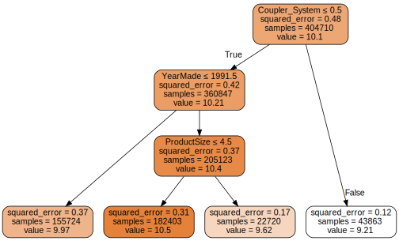
What is in each box above?:
- The decision criterion for the best split that was found
- “samples”: The # of examples in the group
- “value”: The average value of the target for that group
- “squared_error”: The MSE for that group
Note
“The top node represents the initial model before any splits have been done, when all the data is in one group. This is the simplest possible model. It is the result of asking zero questions and will always predict the value to be the average value of the whole dataset.”
A “leaf node” is a node “with no answers coming out of them, because there are no more questions to be answered.”
See p.293 for more on intrepreting the diagram above.
samp_idx = np.random.permutation(len(train_y))[:500]
dtreeviz(
m,
train_xs.iloc[samp_idx],
train_y.iloc[samp_idx],
train_xs.columns,
dep_var,
fontname="DejaVu Sans",
scale=1.6,
label_fontsize=10,
orientation="LR",
)/usr/local/lib/python3.7/dist-packages/sklearn/base.py:451: UserWarning: X does not have valid feature names, but DecisionTreeRegressor was fitted with feature names
"X does not have valid feature names, but"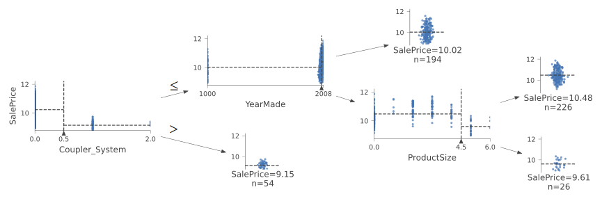
“This shows a cart of the distribution of the data for each split point”
Tip
Use dtreeviz to find problems with the data.
For example, you can see there is a problem with “YearMade” as a bunch of tractors show they are made in the year 1000. The likely explanation is that if they don’t have the info on a tractor, they set it = 1000 to indicate “Unknown”.
We can replace this with something like 1950 to make the visuals more clear …
train_xs.loc[train_xs["YearMade"] < 1900, "YearMade"] = 1950
valid_xs.loc[valid_xs["YearMade"] < 1900, "YearMade"] = 1950samp_idx = np.random.permutation(len(train_y))[:500]
dtreeviz(
m,
train_xs.iloc[samp_idx],
train_y.iloc[samp_idx],
train_xs.columns,
dep_var,
fontname="DejaVu Sans",
scale=1.6,
label_fontsize=10,
orientation="LR",
)/usr/local/lib/python3.7/dist-packages/sklearn/base.py:451: UserWarning: X does not have valid feature names, but DecisionTreeRegressor was fitted with feature names
"X does not have valid feature names, but"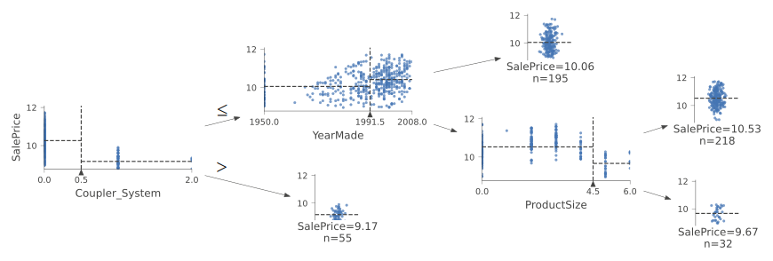
Step 3: Build other trees
m = DecisionTreeRegressor()
m.fit(train_xs, train_y)DecisionTreeRegressor()
Important
Create/Use the metric used by the competition (or your work)
def r_mse(preds, targs):
return round(math.sqrt(((preds - targs) ** 2).mean()), 6)
def m_rmse(m, xs, y):
return r_mse(m.predict(xs), y)m_rmse(m, train_xs, train_y)0.0m_rmse(m, valid_xs, valid_y)0.333111What does the above indicate?
That we might be overfitting … badly (because our training set is perfect and our validation set not so much).
Why are we overfitting?
Because “we have nearly as many leaf nodes as data points … sklearn’s default settings allow it to continue splitting nodes until there is only one item in each leaf node.” See pp.295-296 for more intuition on why trees overfit.
m.get_n_leaves(), len(train_xs)(324559, 404710)m = DecisionTreeRegressor(min_samples_leaf=25)
m.fit(to.train.xs, to.train.y)
m_rmse(m, to.train.xs, to.train.y), m_rmse(m, to.valid.xs, to.valid.y)(0.211677, 0.268059)min_samples_leaf=25 = “Stop when all leaf nodes have a minimum of 25 samples”
A note on categorical variables
Decision trees **don’t have embedding layers - “so how can these untreated categorical variables do anything useful”?
Answer: “It just works!”
Note
While it is possible to replace a categorical variable with multiple OHE columns using something like get_dummies, “there is not really any evidence that such an approach improves the end result.”
See p.297 for more about why OHE aren’t necessary and why decision tree just work with categorical variables out-of-the-box.
Approach 2: Random Forests
A random forest “is a model that averages the predictions of a large number of decision trees, which are generated by randomly varying various parameters that specify what data is used to train the tree (what columns and rows are included in each tree) and other tree parameters”
Why does it work so well?
Because it utlizes bagging.
What is “bagging”?
From the “Bagging Predictors” paper … “Bagging predictors is a method for generating multiple versions of a predictor and using these to get an aggregated predictor…. The multiple versions are formed by making bootstrap replicates (a randomly chosen subset of rows) of the learning set.”
Note
“… although each of the models trained on a subset of data will make more errors than a model trained on the full dataset, those errors will not be correlated with each other. **Different models make different errors … the average of those errors, therefore, is zero!”
This means that we can improve the performance of a model by training it multiple times with a different random subset of the data each time, and then averaging the predictions.
Note
Ensembling is a form of bagging
See p.298 for more details on how bagging works.
Step 1: Define your Random Forest
Since we need to define a variety of parameters that indicate the number of trees we want, how subsets of rows should be randomly chosen, how subsets of columns should likewise be randomly chosen, etc., we’ll put the creation behind a function we can call.
def fit_rf(
xs,
y,
n_estimators=40,
max_samples=200_000,
max_features=0.5,
min_samples_leaf=5,
**kwargs,
):
return RandomForestRegressor(
n_jobs=-1, # Tells sklearn to use all our CPUs to build the trees in parallel
n_estimators=n_estimators, # The number of trees
max_samples=max_samples, # The number of rows to sample for training ea. tree
max_features=max_features, # The number of columns to sample at each split
min_samples_leaf=min_samples_leaf, # Stop when all leaf nodes have at least this number of samples
oob_score=True,
).fit(xs, y)m = fit_rf(train_xs, train_y)m_rmse(m, train_xs, train_y), m_rmse(m, valid_xs, valid_y)(0.170771, 0.232215)
Important
Random Forests are very sensitive to hyperparameter choices!
Recommended hyperparameter values:
n_estimators: “as high a number as you have time to train … more trees = more accuratemax_samples: default (200,000)max_features: default (“auto”) or 0.5min_samples_leaf: default (1) or 4
Tip
Bigger forests using a smalle subset of features tens to be better (see chart below)

How to get the predictions for a SINGLE tree?
tree_preds = np.stack(
[t.predict(valid_xs.values) for t in m.estimators_]
) # added .values (see: https://stackoverflow.com/a/69378867)
r_mse(tree_preds.mean(0), valid_y)0.232215How does n_estimators impact model performance?
To answer this, we can increment the number of trees we use in our predictions one at a time like so:
plt.plot([r_mse(tree_preds[: i + 1].mean(0), valid_y) for i in range(40)])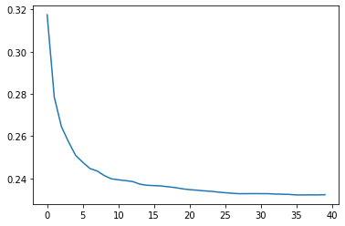
Tip
Use the above technique to determine a good range of trees to try.
Step 2: Determine why our validation set is worse than training
Tip
Use the out-of-bag (OOB) error to determine if we’re overfitting, or if the validation set covers a different time period, or if it’s a bit of both.
“The OOB error is a way of measuring prediction error in the training dataset” based on rows not used in the training of a particular tree. “This allows us to see whether the model is overfitting, without needing a separate validation set.”
“… out-of-bag error is a little like imagining that every tree therefore also has its own validation set” based on the prediction of rows not used in its training.
Important
“This is particularly beneficial in cases where we have only a small amount of training data” (we don’t necessarily have to remove items to create a validation set).
Note
If your OOB error is << than our validation set error, “something else is causing the error”
Note
“we compoare [OOB predictions] to our training labels”since this is being calculated on trees using the training set.”
r_mse(m.oob_prediction_, train_y)0.210601Model Interpretation
How confident are we in our predictions using a particular row of data?
Answer: “use the standard deviation of predictions across the trees, instead of just the mean. This tells us the relative confidence of predictions”
Important
“…be more cautious of using the reulsts for rows where trees give very different results (higher standard deviations)”
Tip
This information is helpful in production where “if you were using this model to decide which items to bid on at auction, a low-confidence prediction might cause you to look more carefully at an item before you made a bid.”
preds = np.stack([t.predict(valid_xs.values) for t in m.estimators_])
preds.shape # => (# of trees, # of predictions)(40, 7988)preds_std = preds.std(0) # get rid of first dimension (the trees)# std for first 5 rows of validation set
preds_std[:5]array([0.25911739, 0.08550421, 0.11939131, 0.29835108, 0.16490343])Which columns are the strongest predictors (and which can we ignore)?
“It’s not normally enough to just know that a model can make accurate predictions - we also want to know how it’s making predictions”
Answer: “feature importances give us this insight.”
def rf_feature_importance(m, df):
return pd.DataFrame(
{"cols": df.columns, "imp": m.feature_importances_}
).sort_values("imp", ascending=False)
def plot_fi(fi_df):
return fi_df.plot("cols", "imp", "barh", figsize=(12, 7), legend=False)fi_df = rf_feature_importance(m, train_xs)
# Let's look at the 10 most important features
fi_df[:10]| cols | imp | |
|---|---|---|
| 57 | YearMade | 0.186662 |
| 6 | ProductSize | 0.133412 |
| 30 | Coupler_System | 0.098091 |
| 7 | fiProductClassDesc | 0.071924 |
| 32 | Hydraulics_Flow | 0.064008 |
| 65 | saleElapsed | 0.050607 |
| 54 | ModelID | 0.049313 |
| 3 | fiSecondaryDesc | 0.045434 |
| 1 | fiModelDesc | 0.033899 |
| 31 | Grouser_Tracks | 0.026686 |
plot_fi(fi_df[:30])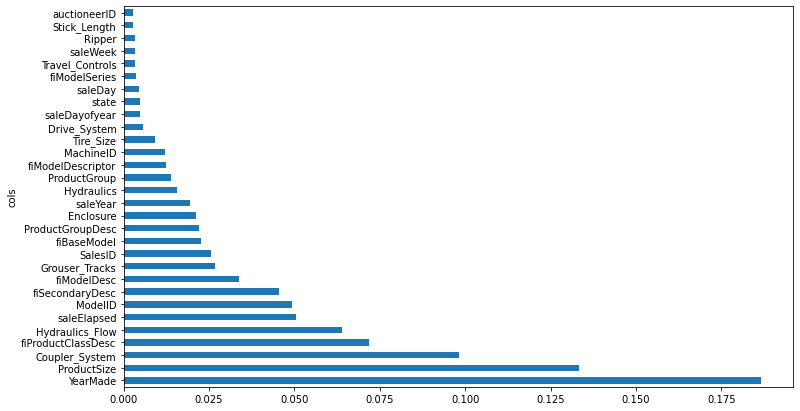
See p.304 for how feature importance is calculated.
Important
By removing variables of low importance we can still get good results while making our model simpler, more interpretable, and easier to maintain
cols_to_keep = fi_df[fi_df.imp > 0.005].cols
len(cols_to_keep)21train_xs_keep = train_xs[cols_to_keep]
valid_xs_keep = valid_xs[cols_to_keep]m = fit_rf(train_xs_keep, train_y)m_rmse(m, train_xs_keep, train_y), m_rmse(m, valid_xs_keep, valid_y)(0.181366, 0.231985)
Important
Compare accuracy of full model with column subset to ensure equitable performance!
The accuracy is about the same as before, but the model is much more interpretable …
len(train_xs.columns), len(train_xs_keep.columns)(66, 21)plot_fi(rf_feature_importance(m, train_xs_keep[:30]))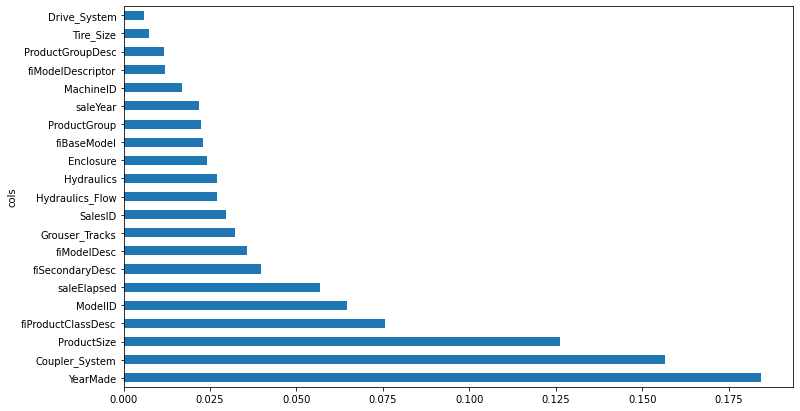
Which columns are effectively redundant?
Important
Like removing unimportant features, by removing redundant information, we make our model simpler, more interpretable, and easier to maintain
cluster_columns(train_xs_keep)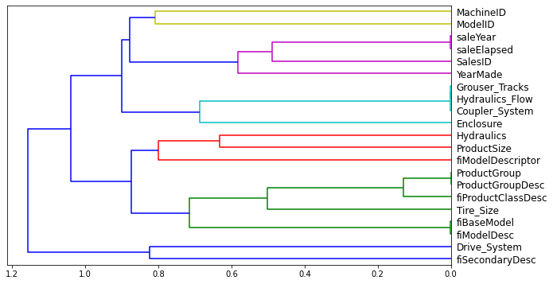
How do we determine similarity?
Important
“… the pairs of columns that are most similar are the ones that were merged together early”
“The most similar paris are found by calculating the rank correlation, which means that all the values are replaced with their rank … and then the correlation is calculated.
How do we know if a feature is “redundant” and can be dropped?
Answer: By removing potentially redundant variables one at a time
“We don’t need [the model] to be very accurate” so we can use a lower max_samples and a higher min_samples_leaf. We just want to see the effect it has by removing certain columns using the OOB score (“a number returned by sklearn that ranges between 1.0 for a perfect model and 0.0 for a random model.”
def get_oob(df, y):
m = RandomForestRegressor(
n_estimators=10,
min_samples_leaf=15,
max_samples=50_000,
max_features=0.5,
n_jobs=-1,
oob_score=True,
)
m.fit(df, y)
return m.oob_score_Our baseline:
get_oob(train_xs_keep, train_y)0.8723047876078355Try removing redundant features one at a time:
redundant_cols = [
"saleYear",
"saleElapsed",
"ProductGroupDesc",
"ProductGroup",
"fiModelDesc",
"fiBaseModel",
"Hydraulics_Flow",
"Grouser_Tracks",
"Coupler_System",
]
{c: get_oob(train_xs_keep.drop(c, axis=1), train_y) for c in redundant_cols}{'Coupler_System': 0.8729675628149272,
'Grouser_Tracks': 0.8735142839769211,
'Hydraulics_Flow': 0.8730586366090629,
'ProductGroup': 0.8731366740450576,
'ProductGroupDesc': 0.8728712200071638,
'fiBaseModel': 0.87126582392193,
'fiModelDesc': 0.8714879359004835,
'saleElapsed': 0.8681954238416791,
'saleYear': 0.8713304844511609}Now try dropping multiple variables (one from each of the tightly aligned pairs we noticed above), and compare accuracy:
cols_to_drop = ["saleYear", "ProductGroupDesc", "fiBaseModel", "Grouser_Tracks"]
get_oob(train_xs_keep.drop(cols_to_drop, axis=1), train_y)0.8695950962336326Assuming that its not much worse, create new DataFrames and save …
train_xs_final = train_xs_keep.drop(cols_to_drop, axis=1)
valid_xs_final = valid_xs_keep.drop(cols_to_drop, axis=1)
# save to filesystem
save_pickle(path / "train_xs_final.pkl", train_xs_final)
save_pickle(path / "valid_xs_final.pkl", valid_xs_final)… then load them back in later
train_xs_final = load_pickle(path / "train_xs_final.pkl")
valid_xs_final = load_pickle(path / "valid_xs_final.pkl")m = fit_rf(train_xs_final.values, train_y)
m_rmse(m, train_xs_final.values, train_y), m_rmse(m, valid_xs_final.values, valid_y)(0.183291, 0.232867)How do find the relationship between two predictors (columns)?
Important
Do this for the most important predictors!
First, check the count of values per category:
p = valid_xs_final["ProductSize"].value_counts().sort_index().plot.barh()
c = to.classes["ProductSize"]
plt.yticks(range(len(c)), c)([<matplotlib.axis.YTick at 0x7f6564704d10>,
<matplotlib.axis.YTick at 0x7f6562ce8350>,
<matplotlib.axis.YTick at 0x7f6562b34d10>,
<matplotlib.axis.YTick at 0x7f65645b61d0>,
<matplotlib.axis.YTick at 0x7f656473b310>,
<matplotlib.axis.YTick at 0x7f656473bd90>,
<matplotlib.axis.YTick at 0x7f656473b250>],
[Text(0, 0, '#na#'),
Text(0, 0, 'Large'),
Text(0, 0, 'Large / Medium'),
Text(0, 0, 'Medium'),
Text(0, 0, 'Small'),
Text(0, 0, 'Mini'),
Text(0, 0, 'Compact')])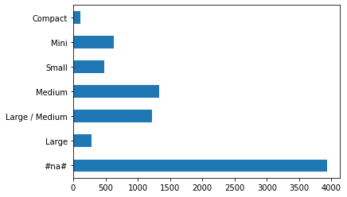
x = valid_xs_final["YearMade"].hist()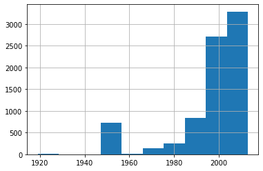
Second, built a partial dependence plot
Note
“Partial dependence plots answer the question: if a row varied on nothing other than the feature in question, how would it impact the dependent variable?
See pp.309-10 for info on how to do this, but in essence, we are attempting to isolate the effects of changes to a single variable.
from sklearn.inspection import PartialDependenceDisplay
fig, ax = plt.subplots(figsize=(12, 4))
PartialDependenceDisplay.from_estimator(
m, valid_xs_final, ["YearMade", "ProductSize"], grid_resolution=20, ax=ax
)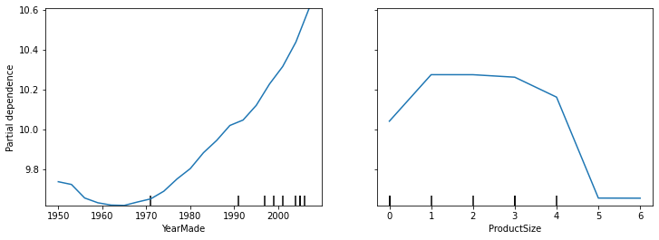
Intrepretation
The “YearMade” plot makes sense as it shows a linear relationship with price (“remember that our dependent variable is after taking the logarithm, so this means that in practice there is an exponential increase in price). Again, this is expected given that depreciation =”a multiplicative factor over time … varying year made ought to show an exponential relationship to sales price”
The “ProductSize” should raise concerns, “it shows that for the final group, which we saw is for missing values, has the lowest price.
Important
If you see an unusual relationship like this between a variable and the target, you want to understand why there are missing values and what a missing value means!
Important
Missing values can sometimes be useful predictors
Important
Missing values can sometimes indicate data leakage.
What is “data leakage”?
“The introduction of information about the target of a data mining problem, which should not be legitimately available to mine from.” The idea is that you’re cheating by introducing something by way of the independent variables that biases your predictions favorably that you won’t be able to utlize at inference time. See p.311-12 for examples.
How to determine if you have data leakage?
From p.321 … “build a model and then …
- Check whether the accuracy of the model is too good to be true.
- Look for important predictors that don’t make sense in pratice.
- Look for partial dependence plot results that don’t make sense in practice. (see above)
Tip
“… often a good idea to build a model first and then do you data cleaning rather than vice versa … can help you identify potentially problematic data issues.
For predicting a specific row of data, what were the most important factors and how did they influence the prediction?
Answer: Use treeinterpreter. Note that:
prediction = the prediction made by RF
bias = the prediction based on taking the mean of the dependent variable (the root model for every tree)
contributions = “tells us the total change in prediction due to each of the independent variables.
“Therfore, the sum of contributions plus bias must equal the prediction for each row!
from treeinterpreter import treeinterpreterrow = valid_xs_final.iloc[:5]pred, bias, contributions = treeinterpreter.predict(m, row.values)pred[0], bias[0], contributions[0].sum()(array([10.00298786]), 10.104457702350853, -0.10146984568626016)What is the best waty to visualize this?
Answer: A waterfull plot will show us “how the positive and negative contributions from all the independent variables sum up to create the final prediction.”
import waterfall_chartwaterfall_chart.plot(
valid_xs_final.columns,
contributions[0],
threshold=0.08,
rotation_value=45,
formatting="{:,.3f}",
)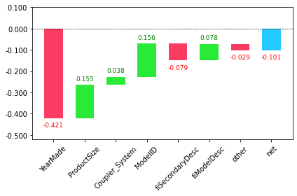
Where is this information useful?
Answer: In production “rather than during model development. You can use it to provide useful information to users of your data product about underlying reasoning behind the predictions.”
The “Extrapolation” problem
Important
“Random forests are not able to extrapolate the types of data they have seen … that’s why we need to make sure our validation set does not contina out-of-domain data.”
See. pp.315-316.
How do determine if our “test set” is distributed in the same way as our “training set”, and if it isn’t, what columns are causing the difference?
Answer: Use a random forest where we “try to predict whether a row is in the validation set or training set.”
combined_df = pd.concat([train_xs_final, valid_xs_final])
is_valid = np.array([0] * len(train_xs_final) + [1] * len(valid_xs_final))ood_m = fit_rf(combined_df, is_valid)rf_feature_importance(ood_m, combined_df)[:6]| cols | imp | |
|---|---|---|
| 5 | saleElapsed | 0.900343 |
| 9 | SalesID | 0.073015 |
| 14 | MachineID | 0.023312 |
| 0 | YearMade | 0.001036 |
| 6 | ModelID | 0.000405 |
| 10 | Enclosure | 0.000402 |
“This shows that three columns differ significantly between the training and validation sets: saleElapsed, SalesID, and MachineID’
See p.317 for infering what this is.
What to do with this info?
Answer: Compare the effects of removing each of these columns with the original model
m = fit_rf(train_xs_final, train_y)
print("orig:", m_rmse(m, valid_xs_final, valid_y))orig: 0.231632for c in ("SalesID", "saleElapsed", "MachineID"):
m = fit_rf(train_xs_final.drop(c, axis=1), train_y)
print(c, m_rmse(m, valid_xs_final.drop(c, axis=1), valid_y))SalesID 0.231139
saleElapsed 0.235471
MachineID 0.229936“… looks like we should be able to remove SaleID and MachineID without losing any accuracy”
time_vars = ["SalesID", "MachineID"]
train_xs_final_time = train_xs_final.drop(time_vars, axis=1)
valid_xs_final_time = valid_xs_final.drop(time_vars, axis=1)m = fit_rf(train_xs_final_time, train_y)
m_rmse(m, valid_xs_final_time, valid_y)0.228524
Note
“Removing these variables has slightly improved the model’s accuracy; but more importantly, it should make it more resilient over time, and eaiser to maintain and understand.”
Important
Build a model where the dependent variable is is_valid for ALL datasets!
“It can often uncovere subtle domain shift issues that you may otherwise miss.
Important
“One thing that might help in our case is simply to avoid using old data”
“Often, old data shows relationships that just aren’t valid anymore”
Important
This “shows you shouldn’t always use your entire dataset; sometimes a subset can be better.”
train_xs["saleYear"].hist()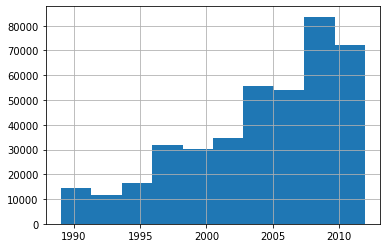
recent_sales = train_xs["saleYear"] > 2004
train_xs_recent = train_xs_final_time[recent_sales]
train_y = train_y[recent_sales]m = fit_rf(train_xs_recent, train_y)
m_rmse(m, train_xs_recent, train_y), m_rmse(m, valid_xs_final_time, valid_y)(0.177533, 0.229519)Approach 3: Neural Networks
Tip
“We can leverage the work we did to trim unwanted columns in the random forest by using the same set of columns”
nn_df = pd.read_csv(path / "TrainAndValid.csv", low_memory=False)
sizes = ["Large", "Large / Medium", "Medium", "Small", "Mini", "Compact"]
nn_df.ProductSize = nn_df.ProductSize.astype("category")
nn_df.ProductSize = nn_df.ProductSize.cat.set_categories(
sizes, ordered=True
) # note: "inplace=True" is depreciated as of 1.30
nn_df[dep_var] = np.log(nn_df[dep_var])
nn_df = add_datepart(nn_df, "saledate")nn_df_final = nn_df[list(train_xs_final_time.columns) + [dep_var]]
Important
Categorical columns require embeddings.
fastai uses the max_card to determine what columns should be treated as categoricals … “Embedding sizes larger that 10,000 should generaly be used only after you’ve tested whether there are better ways to group the variable”
nn_cont, nn_cat = cont_cat_split(nn_df_final, max_card=9000, dep_var=dep_var)
Important
“A categorical variable cannot, by definition, extrapolate outside the range of values that it has seen, **but we want to be able to predict auction sale prices in the future”
Therfore, “saleElapsed” needs to be made into a continous variable … which it alread is
nn_cont['saleElapsed']How to find the cardinality of each categorical?
nn_df_final[nn_cat].nunique()YearMade 73
ProductSize 6
Coupler_System 2
fiProductClassDesc 74
Hydraulics_Flow 3
ModelID 5281
fiSecondaryDesc 177
fiModelDesc 5059
Enclosure 6
Hydraulics 12
ProductGroup 6
fiModelDescriptor 140
Tire_Size 17
Drive_System 4
dtype: int64“… two variables pertaining to the ‘model’ of the equipment, both with similar very high cardinalities, suggests that they may contain similar, redundant information.”
Important
Removing rendundant columns can make your model more efficient! Try and see what the impact is.
cols_to_drop = ["fiModelDescriptor"]
train_xs_recent2 = train_xs_recent.drop(cols_to_drop, axis=1)
valid_xs_recent2 = valid_xs_final_time.drop(cols_to_drop, axis=1)
m2 = fit_rf(train_xs_recent2, train_y)
m_rmse(m2, train_xs_recent2, train_y), m_rmse(m2, valid_xs_recent2, valid_y)(0.176776, 0.230194)nn_cat.remove("fiModelDescriptor")print(nn_cont)
print(nn_cat)['saleElapsed']
['YearMade', 'ProductSize', 'Coupler_System', 'fiProductClassDesc', 'Hydraulics_Flow', 'ModelID', 'fiSecondaryDesc', 'fiModelDesc', 'Enclosure', 'Hydraulics', 'ProductGroup', 'Tire_Size', 'Drive_System']
Important
Neural networks require normalization while random forest does not because neural networks care about scaling!
nn_procs = [Categorify, FillMissing, Normalize]
nn_to = TabularPandas(
nn_df_final, nn_procs, nn_cat, nn_cont, splits=splits, y_names=dep_var
)
Note
“Tabular models and data don’t generally require much GPU RAM, so we can use larger batch sizes”
dls = nn_to.dataloaders(bs=1024)
Tip
“it’s a good idea to set y_range for regression models
y = nn_to.train.y
y.min(), y.max()(8.465899467468262, 11.863582611083984)
Tip
The default number of hidden layers (200,100) work well for small datasets, but should be increased if you are working with a larger dataset (500,250) for example.
from fastai.tabular.all import *
learn = tabular_learner(
dls, y_range=(8, 12), layers=[500, 250], n_out=1, loss_func=F.mse_loss
)learn.lr_find()SuggestedLRs(valley=0.00015848931798245758)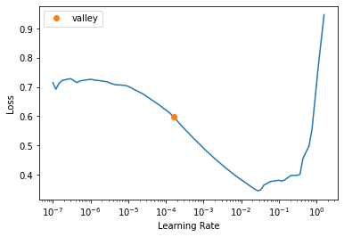
Note
There is no need to fine tune since we aren’t starting with a pretrained model.
learn.fit_one_cycle(5, 1e-2)| epoch | train_loss | valid_loss | time |
|---|---|---|---|
| 0 | 0.062468 | 0.063260 | 00:15 |
| 1 | 0.053739 | 0.074410 | 00:15 |
| 2 | 0.047957 | 0.055398 | 00:15 |
| 3 | 0.042492 | 0.050278 | 00:15 |
| 4 | 0.039967 | 0.050096 | 00:14 |
preds, targs = learn.get_preds()
r_mse(preds, targs)0.223821learn.save("nn")Path('models/nn.pth')Approach 4: Boosting
Here “we add models instead of averaging them” (as compared to ensembling). See p.323-24 for all the details, but here’s how it works in general:
- Train small model that underfits
- Get predictions for model from #1
- Get the “residuals” (‘the error for each point in the training set’) by subtracting the predictions from the targets.
- Go back to step 1, “but instead of using the original targets, use the residuals as the targets for training.
- Continue stesp 1-4 until you need to stop (e.g., max number of trees, you start overfitting, etc…)
Steps 3-4 are the bread and butter of things.
Important
“… each new tree will be attempting to fit the error of all of the previous trees combined. Because we are continually creating new residuals by subtracting the predictions of each new tree from the residulas from the previous tree, the residuals will get smaller and smaller.”
Some go as far as saying that such models are all you need :)
XGBoost Is All You Need
— Bojan Tunguz (@tunguz) March 30, 2022
Deep Neural Networks and Tabular Data: A Surveyhttps://t.co/Z2KsHP3fvp pic.twitter.com/uh5NLS1fVP
How do you make predictions with an ensemble of boosted trees?
Answer: By calculating the predictions from each tree and then adding them all together.
Note
“… unlike with random forests, with this approach, there is nothing to stop us from overfitting …. in a boosted ensemble, the more trees you have, the better the training error becomes, and eventually you will see overfitting on the validation set.”
Important
“Unlike random forests, gradient boosted trees are extremely sensitive to the choices of these hyperparameters.”
XGBoost and sklearn’s HistGradientBooting models are legit ML models to try …
Here are my top used ML algos for tabular data problems:
— Bojan Tunguz (@tunguz) April 22, 2022
1. XGBoost
2. HistGradientBoosting
3. Logistic regression/ Ridge regression
4. LightGBM
5. MLP
6. A blend of 1. And 5.
Other things to try
Ensembling (pp.322-23)
This is a form of “bagging” where averaging the predictions of models trained using different algorithms, each of which it is reasonable to expect would produce differnt kinds of errors, would likely product better predictions.
Combining embeddings with other models (pp.324-25)
“… shows that you can get much of the performance improvement of a neural network without having to use a neural network as inference time” by using the embeddings as inputs (which are just array lookups) to small decision tree ensemble!
In summary
Tip
Start with a random forest!
“This will give you a strong baseline … can then use that model for feature selection and partial dependence analysis to get a better understanding of your data.”
Pros/Cons of each approach:
Random forests: Pros:
- Easiest to train
- Resiliant to hyperparameter choices
- Require little preprocessing
- Fast to train
- Should not overfit if you have enough trees Cons:
- Can be less accurate (esp. if extrapolation is required “such as predicting future time periods.”
Gradient boosting machines (GBMs): Pros:
- Often more accurate than random forests Cons:
- Sensitive to hyperparmeter choices
- Can overfit
Neural Networks: Pros:
- Can extrapolate well
- Can provide good results. Cons:
- Take longest time to train
- Require extra preprocessing (e.g., normalization)
Resources
https://book.fast.ai - The book’s website; it’s updated regularly with new content and recommendations from everything to GPUs to use, how to run things locally and on the cloud, etc…
“Hands-On Gradient Boosting with XGBoost and scikit-learn” - Unread personally, but on my bookshelf and recommended by those in the know.
tsai - A time series/sequences focused library built on PyTorch and fastai by Ignacio Oguiza